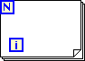
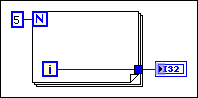
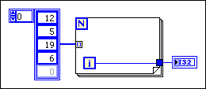
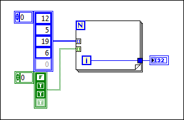
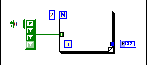
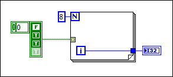

The For Loop does not know how many times to execute. You must either wire the N count terminal of the For Loop or connect an array wire to the edge of the For Loop with indexing enabled.

You can correct this error in the following ways:


You can have multiple tunnels with indexing enabled. The For Loop will execute as many iterations as the smallest array. In the following example, the For Loop will execute three times because the smallest array has only three elements.


